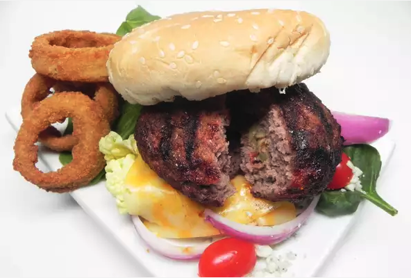

Deluxe Olive-Stuffed Burgers

Ingredients
- 2 pounds ground beef
- 1/2 teaspoon garlic powder
- 1/2 teaspoon gorund black pepper
- 1/4 cup sliced green olives
- 4 slices Cheddar cheese
- 4 hamburger burns, split and toasted
- 1/4 cup mayonnaise
- 4 tomato slices
- 4 onion slices
- 4 leaves lettuce
Directions
- Preheat grill for medium heat and lightly oil the grate
- Combine ground beef, garlic powder, and black pepper in a bowl; mix until well combined. Press into 8 equal hamburger patties 1/4-inch thick. Place 1 tablespoon olives in the center of 4 patties. Top with remaining patties; pinch edges to seal.
- Grill patties until no longer pink in the center, 6 to 8 minutes per side. An instant-read thermometer inserted into the center should read at least 160 degrees F (70 degrees C). Top each with 1 slice Cheddar cheese; remove from grill.
- Place each patty on a bun; top with 1 tablespoon mayonnaise, 1 tomato slice, 1 onion slice, and 1 lettuce leaf.
Nutrition Facts
Per Serving: 877 calories; protein 53.1g; carbohydrates 50.2g; fat 51.5g; cholestrol 176.9mg; sodium 853.1mg.